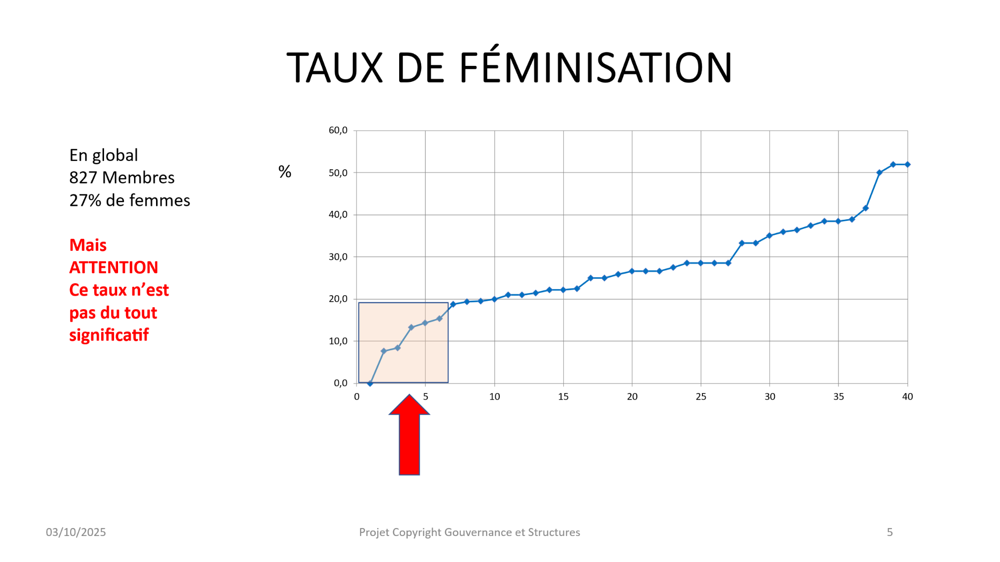

Assises de la parité 2012 et 2023
Forum de la Mixité - 21 décembre 2012
Au Forum de la Mixité du 21 décembre 2012, Guy Le Péchon a été l'un des intervenants au sein de l'atelier Leyders Associates sur le thème :
"Se positionner pour être administrable. Féminiser son board."
Il a évoqué les profils des administratrices au sein de nombreuses sociétés cotées sur Euronext et suggéré surtout penser à convaincre les Présidents d'élargir de façon professionnelle les cooptations des membres de leurs Conseils.
Webinaire - 8 mars 2023
Reprenant mis à jour des éléments de son intervention enregistrée - Assises de la parité 2012 et 2023 - le 8 mars 2023 dans un Webinaire organisé par le Centre des Professions financières, fin juin 2023, Guy Le Péchon a été interviewé par Lucille Desjonquères au cours de la séance d'inauguration à Bercy des Assises de la Parité.
Il a pu donner un aperçu de la situation de la féminisation des Instances de Gouvernance (Conseils d'Administration ou de Surveillance, COMEX et CODIR) des sociétés du CAC 40 à fin juin 2023.
Présentation de l'étude
Copie de l'une des planches majeures projetées
Obtenir le rapport complet
G & S enverra copie de la présentation de l'étude et du rapport détaillé à fin juin 2023 aux personnes le demandant indiquant leurs coordonnées à contact@g-et-s.com